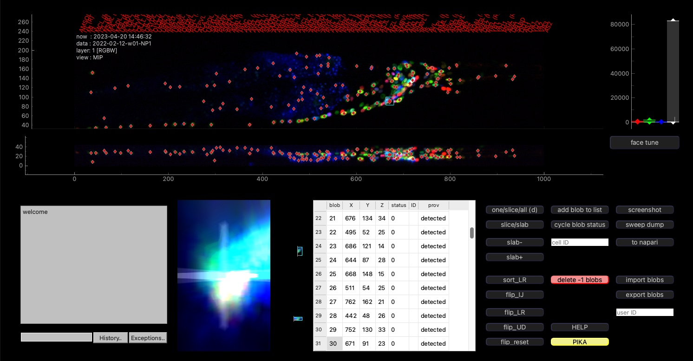

Code
This page contains descriptions and links to relevant code for reading, processing, and analyzing neuroPAL images.
Eats-worm
Eats-worm is an open source software system for automatic neuron segmentation and identification with GUI support for manual curation of algorithmic results. Eats-worm contains a full data-processing pipeline that takes in raw neuroPAL images and metadata, runs basic preprocessing steps, finds neuron centers, assigns probabilistic labels to those neuron centers, and extracts time series calcium activity from those neurons. Eats-worm can be used with minimal coding experience besides setting up a python environment and making basic parameter changes. The "NP_example.py" file is provided which demonstrates an example of how eats-worm can be used. The repository also contains code for converting raw images and segmentation results to the NWB format.
Instructions for installation and use of the eats-worm software is provided on the readme page of the attached Github repository.